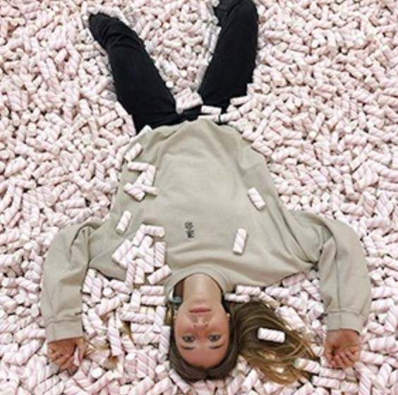

Токио-2020: Спортсменки, за которых мы будем болеть
Вдохновляющие истории успеха и преодоления
НА ОЛИМПИАДЕ В ТОКИО СТАВЯТ РЕКОРДЫ задолго до открытия соревнований. Впервые в истории на Олимпийских играх будет гендерное равенство, если посмотреть на число участников и участниц — 49 процентов против 51 (ещё в 1996 году женщины составляли всего 34 процента). Также в этом году всё больше женщин организовывают Игры: в числе менеджеров очередных Игр появилось сразу двенадцать директорок. Наконец, эта Олимпиада уже поставила рекорд по числу спортсменов и спортсменок из числа ЛГБТК-людей — в Outsports насчитали как минимум 142 участника и участницы из разных стран; это в два раза больше, чем на предыдущих Играх в Рио-де-Жанейро в 2016 году.
На кого подписаться: Новый бьюти-канал Джонатана Ван Несса
Уход за кожей и волосами и забота о себе со звездой «Queer Eye»
ПРОДОЛЖАЕМ РАССКАЗЫВАТЬ о достойных аккаунтах в соцсетях, через которые можно рассматривать целый мир. Джонатан Ван Несс, парикмахер и звезда передачи «Queer Eye» на Netflix, запустил свой бьюти-канал на YouTube. В своих видео он (Ван Несс — небинарная персона, предпочитает местоимения «он/его») расскажет и покажет, как укладывает собственные волосы, как стрижёт друзей и родных, и поделится советами для разных типов волос. Кроме этого, Джонатан будет говорить об уходе за кожей, а также в целом о заботе о себе. «Ведь красота — это и о том, что внутри», — говорит Ван Несс. Харизматичный телеведущий призывает зрителей писать в комментариях, что им интересно узнать в рамках его шоу. В первом видео Ван Несс показал, как делает стрижку своему мужу Марку, — все, кто во время карантина начали сами заниматься своими волосами или стричь близких, точно получат пару хороших советов. Советуем подписаться на JVN Beauty!

В закладки: Подкаст о современном родительстве «Родили и не поняли»
Его запустили «НЭН» и Chips Journal
В РУБРИКЕ «В ЗАКЛАДКИ» рассказываем о сайтах и онлайн-сервисах — как полезных, так и совершенно бесполезных, но весёлых и удивительных, — которые, собственно, стоит занести в избранное или добавить в RSS-ленту.
«Мне казалось, что это сюр»: Как я сделала принты для коллекции Jacquemus
Иллюстраторка Ирка Бырка о работе с дизайнером и жизни в закрытом городе
В КОНЦЕ ИЮНЯ БРЕНД JACQUEMUS показал первую за год коллекцию под названием La Montage. На шоу попали не все вещи, часть коллекции появилась на сайте — там же сейчас можно найти футболки с изображением тюльпанов, которые нарисовала российская иллюстраторка и моушн-дизайнерка Ирка Бырка. Мы поговорили с Ирой о её детстве, жизни в маленьком закрытом городе посреди леса и, конечно, о работе с брендом Jacquemus.
Детство и переезды
Я родилась в Якутии, в маленьком посёлке недалеко от города Якутск. Для более комфортных условий меня отправили расти к бабушке с дедушкой в Украину, Львовскую область. Когда мне было 5 лет, под нашим посёлком нашли золото, и его быстро расселили и полностью снесли. Люди разъехались кто куда, и мои родители довольно случайным образом оказались в закрытом городе Радужный во Владимирской области. Меня перевезли туда, чтобы я пошла в школу. И тогда я была просто в шоке от переезда, потому что всё было другим: архитектура, дети, люди. Я никогда не ассоциировала это место со своим домом, каждое лето уезжала в Украину и еще на пару недель в Молдову, так как мой папа оттуда. Лет с 13-ти я начала ходить в турклуб, это был мой способ побега — уйти в поход, а еще возможность посмотреть дивные природные места. Я всегда знала, что уеду из маленького города и довольно рано поняла, что хочу уехать именно в Москву. Мне хотелось в большой город, нравилась суета и масштаб. В 11 классе я выбрала московский институт, училась по шесть дней в неделю, а в воскресенье вставала в 5 утра, чтобы поехать в Москву на подготовительные курсы. В итоге я поступила на бюджет и в 16 лет переехала в столицу.